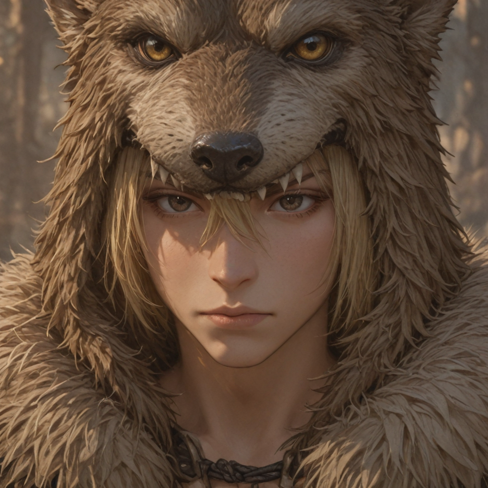
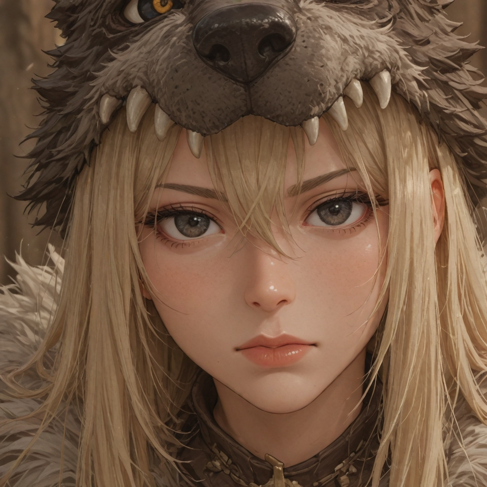
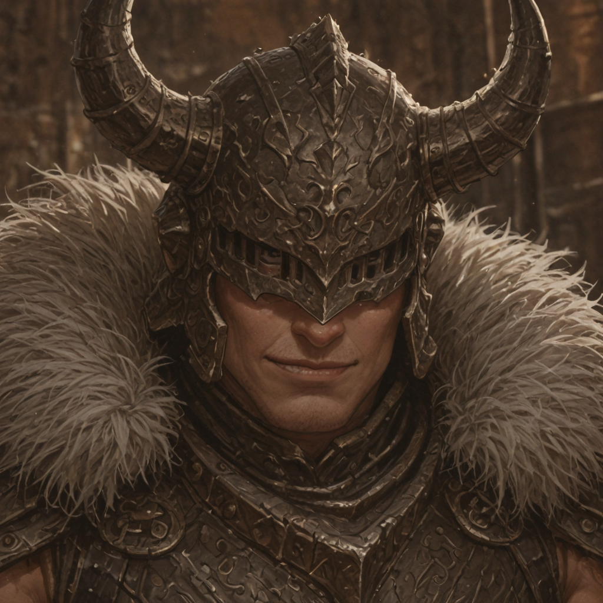
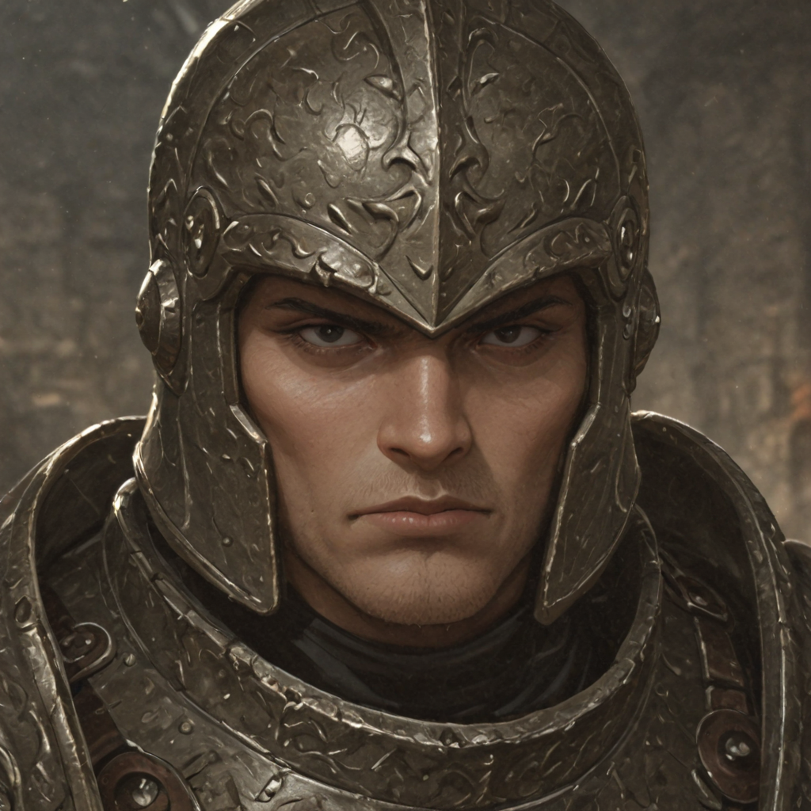
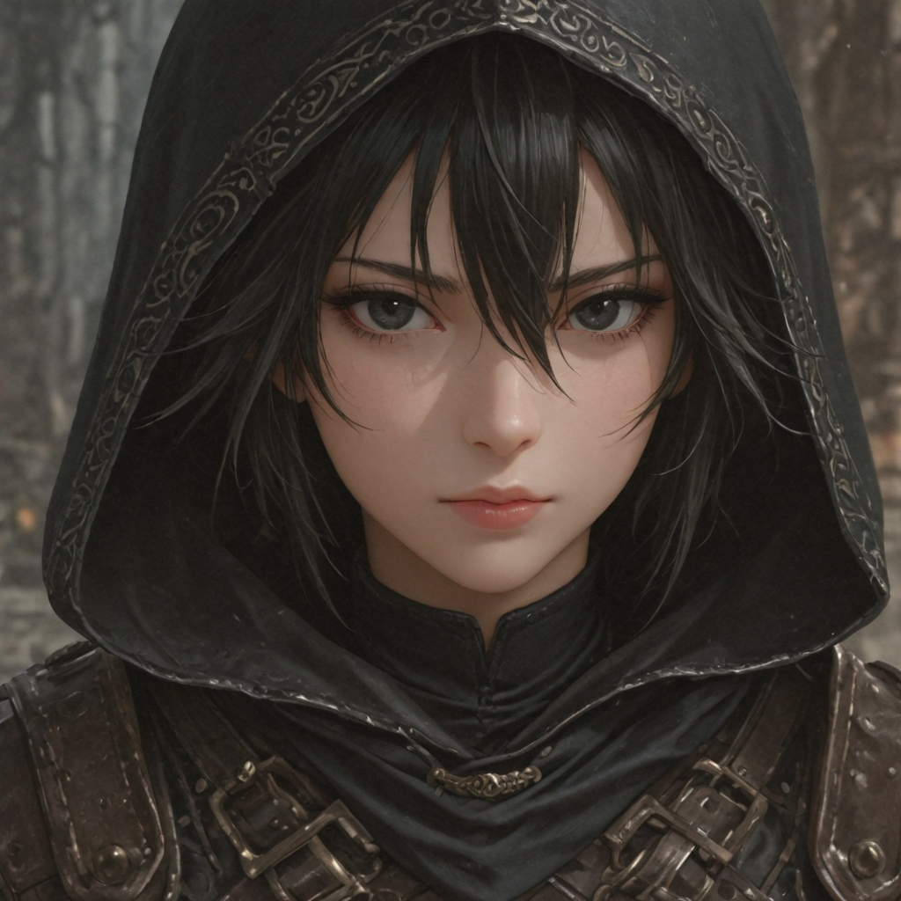
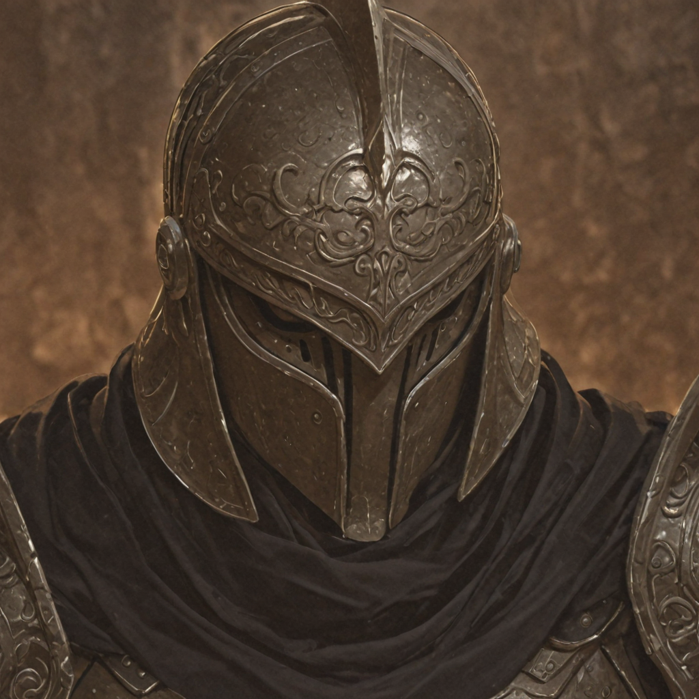
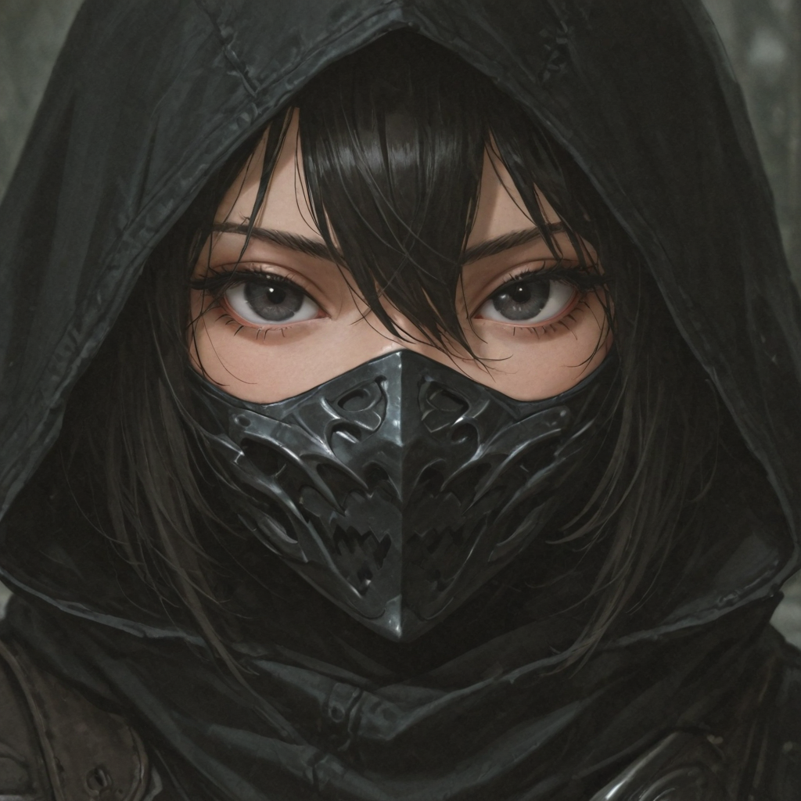
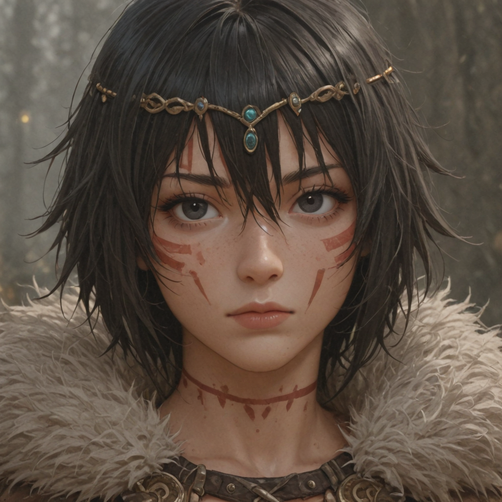
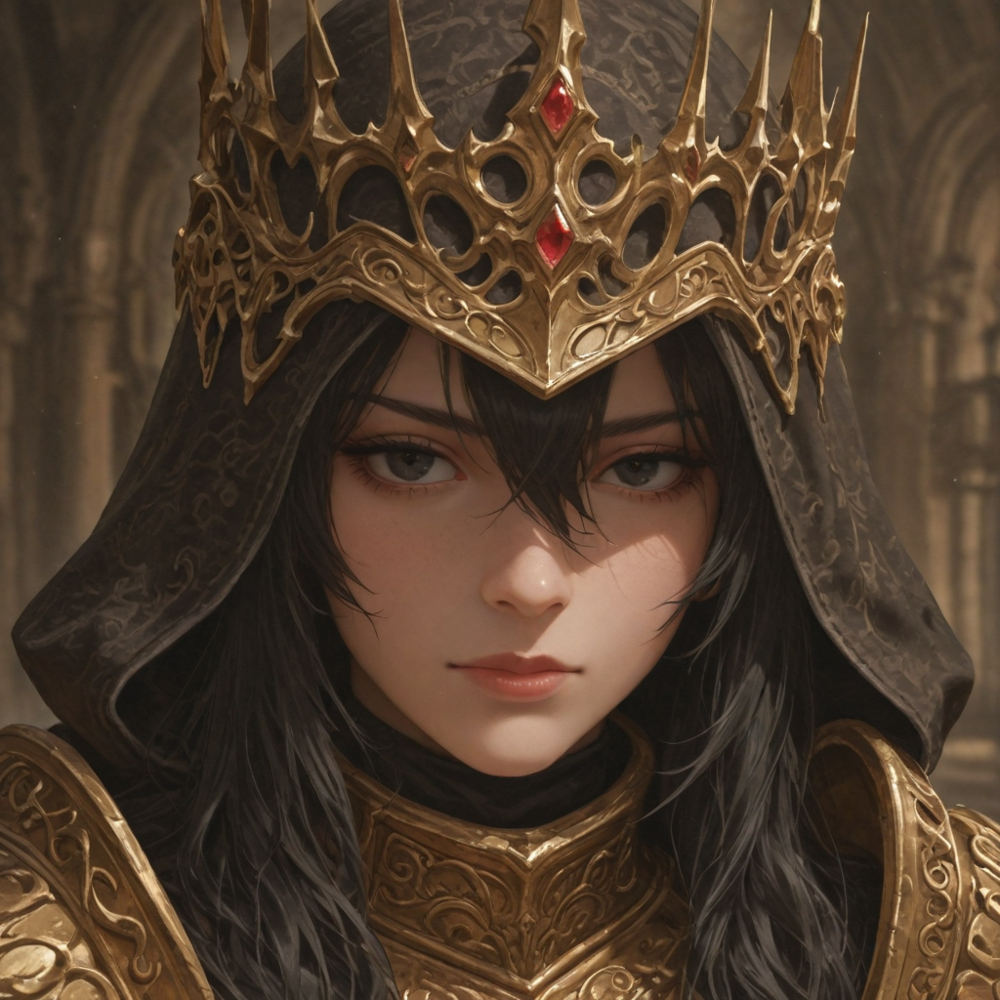

The Backbone of the Dominion
The largest group within the Kharos Dominion are the Tribes. Each Tribe is ruled by a Chieftain, who is strictly responsible for the martial training of his tribesmen. The words of a Chieftain are absolute, as he is the voice of the Warchief.
Fighting styles vary widely across the tribes. While many choose to rely on raw strength and wield massive weapons as bulky Thugs, others prefer agile equipment and rapid strikes, starting their violent careers as swift Fighters.
As they survive the endless conflicts, Thugs can eventually evolve into armor-crushing Destroyers or resilient Champions. Meanwhile, Fighters branch into either deadly Assassins adept at ambushes, or relentless Berserkers who thrive on the edge of death.
At the absolute pinnacle of the tribes, one might rarely find the Conquerors—incredible beings who display skills far beyond normal human limitations, revered as living weapons of the Dominion.
Active Roster


Chieftain
Handpicked by the Warchief, these mighty warriors command their groups with an iron fist. They wield massive axes and intimidate enemies with their mere presence.
Thug
The basic warrior who prefers brawn over brains. These bulky individuals use big, rudimentary clubs to mercilessly batter their foes.
Fighter
Warriors who prefer an agile combat style. While not as tough as Thugs, they are much faster, making them perfect for quick, overwhelming alpha strikes.
Basher
Thugs who have survived long enough to gain experience. They wield refined, heavier clubs and are protected by better armor.
Raider
Veteran Fighters who have learned dirty tricks on the battlefield, integrating debilitating low blows into their rapid strikes.

Mauler
Bashers specialized in pure destruction. They wield massive warhammers to crush enemy bones and bypass heavy armor entirely.

Warrior
Bashers who adopt a slightly more defensive approach. Wielding greataxes, they are proficient at absorbing the blood they spill to heal their own wounds.

Ambusher
Raiders who prefer to strike from the shadows. While not highly resilient, they possess the uncanny ability to hide and bleed their targets dry.

Rager
Raiders who embrace their inner fury. Their durability is low, but their physical strength increases drastically the closer they are to death.

Destroyer
Maulers who have mastered the way of the greathammer. These towering hulks effortlessly crush armor, turning enemy defenses into extra damage.

Champion
Expert Warriors who have reached the absolute peak of offense and defense, thriving on the frontlines through sheer bloodlust and self-healing.

Assassin
Ambushers who have perfected the art of stealth. They begin battles unseen and specialize in delivering fatal, bleeding strikes to vulnerable targets.

Berserker
Ragers consumed by unmatched fury. They deal an absurd, terrifying amount of damage, turning themselves into priority threats on the battlefield.

Conqueror
Chosen by fate or sheer willpower. More akin to monsters than humans, they feed on the life essence of those they slay and effortlessly shatter the very ground beneath them.